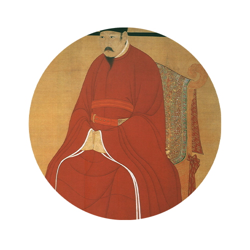

襟

履

袍

裙

衫

簪
唐代开始，工艺装饰普遍使用花卉图案，其构图活泼自由、疏密匀称、丰满圆润。 特别是波状的连续纹样与花草相结合后，就是唐代盛行的缠枝图案。 唐代服饰图案，改变了以往那种以天赋神授的创作思想，用真实的花、草、鱼、虫进行写生， 但传统的龙、凤图案并没有被排斥，这也是由皇权神授的影响而决定的。 这时服饰图案的设计趋向于表现自由、丰满、肥壮的艺术风格。
襟
履
袍
裙
衫
簪
热去解钳釱，飘萧秋半时。
微雨池塘见，好风襟袖知。--杜牧《秋思》
客身逢故旧，发兴自林泉。
过懒从衣结，频游任履穿。--杜甫《春日江村五首》
侧置低歌座，平铺小舞筵。
闲多揭帘入，醉便拥袍眠。--白居易《青毡帐二十韵》
馆娃宫外姑苏台，郁郁芊芊拨不开。
无风自偃君知否，西子裙裾曾拂来。--刘禹锡《忆春草》
近作新婚镊白髯，长怀旧卷映蓝衫。
更欲携君虎丘寺，不知方伯望征帆。--韦应物《送秦系赴润州》
华簪极身泰，衰鬓惭木荣。
苟得不可遂，吾其谢世婴。--张九龄《巡属县道中作》
唐朝国力强盛，经济发达，文化繁荣，对外交往频繁，宗教信仰自由， 所以，唐朝的饮食文化非常兴盛。在扬州、长安、洛阳、广州等大城市里，“街店之内， 百种饮食，异常珍满。”不同地区、不同国家的水陆珍馔，应有尽有。在民间，“无问贫富之家， 教女不以针缕绩纺为功，但躬庖厨、勤刀机而已。善醯醢菹者，得为大好女矣。 ……故偶民争婚聘者，相与语曰：‘我女裁袍补袄，即灼然不会，若修治水蛇、黄鳝，即一条必胜一条矣。’”
唐代建筑是中国封建社会经济文化发展的高潮时期，建筑技术和艺术也有巨大发展。 唐朝建筑的风格特点是气魄宏伟，严整开朗。建筑发展到了一个成熟的时期，形成了一个完整的建筑体系。 它规模宏大，气势磅礴，形体俊美，庄重大方，整齐而不呆板，华美而不纤巧，舒展而不张扬， 古朴却富有活力，正是当时时代精神的完美体现。 如今中国现存的唐代建筑仍有百十余座，砖石建筑在其中占绝大多数。
唐代交通十分发达，以京师长安为中心的陆路交通网，以及由大运河和南方水乡构成的水路交通网四通八达， 同时，唐代驿站制度健全，为公私行旅和商贾往来提供了非常便利的条件。唐代养马业经历了一个由衰而盛的过程， 开元盛世，不仅政府拥有许多官马，民间私马数量也相当可观，马车成为重要的交通工具。
车在唐代可分为礼仪用车和日常用车两种， 唐朝严格规定了上自皇帝下至大臣、各个等级在各种礼仪场合的用车，这些礼仪用车绝大部分是沿袭前代的。
马是唐代的重要出行工具，上自皇帝，中经朝臣百官，下至进士侠客、商贾市民，无不骑马。
驴是比马低一等的出行工具。乘马者多为有权或有钱之人，而乘驴者大多属一般民众。
出行工具除了车、马、驴、牛外，还有骡、骆驼、象等。骡在当时还是使用比较多的， 史籍记载骑骡的人有胡人、隐士、奴仆等。
唐代是我国政治、经济高度发展，文化艺术繁荣昌盛的时代， 是封建文化灿烂光辉的时代。唐代统一了魏晋南北朝和隋的混乱分裂状态， 建立了统一强盛的国家，对外贸交易发达，生产力极大发展，较长时间国泰民安。 尤其当盛唐成为亚洲各民族经济文化交流中心的时期，更是我国文化史上最光辉的一页。 这个时期吸收印度和伊朗文化，融入当时的壁画、石刻、雕刻、书、画、绢绣、 陶俑及服饰之中；唐朝的饮食广泛地借鉴和吸收国外饮食文化的精华， 同时也把先进的中国饮食文化传播到其它国家和地区；唐代建筑大多气魄宏伟，严整开朗。 这一时期的建筑不止对后来中国建筑的发展产生影响，同时对日本、韩国等东南亚国家的建筑风格形成也影响； 唐朝同时也是我国古代道路发展的极盛时期， 陆路、水路、海路交通发达，形成了几个交通中心。充分体现出来大唐的繁荣与强盛。
资料来源：《全唐诗》百度百科 中国历史网
文案：杨芮，刘佳欣，郑君郁
策划：杨芮，刘佳欣，郑君郁
网页设计：杨芮，刘佳欣，郑君郁
网页制作：杨芮，刘佳欣，郑君郁
数据分析：杨芮，刘佳欣，郑君郁